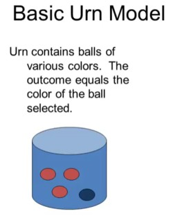
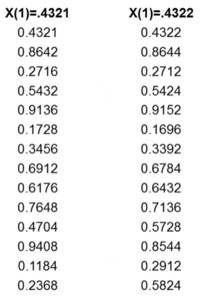
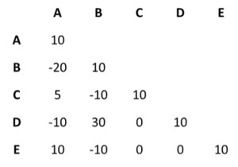

Path dependence
- Path dependence
- Is a property of the state of a complex system at time T depends on all prior time steps t<T. More plainly that history matters.
This is clearly quite different from Markov process models where only the current state matters and history does not.
Urn models can help to understand path dependence, and to distinguish between different types of path dependence. 1. deterministic outcome such as what happens today could be path dependent, 2. stochastic path dependence which is an equilibrium distribution over all possible outcomes of what happens in the long run could also be path dependent.
Example 1 One of the most famous examples of path dependence involves the standard typewriter keyboard configuration called QWERTY. Initially, there were lots of different keyboard configurations, but it turned out that in the path through which history played out, QWERTY ended up getting locked in due to a process of increasing returns. The more people had QWERTY, the more people wanted it, and the more typewriters that were built with it, and so it became locked in.
- Path dependence
- means that outcome probabilities depend on the sequence of previous outcomes, which is called the path.
- Phat dependence
- means that outcome probabilities depend on past outcomes but not on their order. The past impacts the outcome but it doesn’t necessarily determine it.
{kind=link}
Example 2 (Tesla v.s. Edison) Alternating current or direct current. Edison was a proponent of direct current, while Tesla was a proponent of alternating current. Edison was the first to develop a power plant, and he developed it using direct current. Tesla developed alternating current, which was more efficient for transmitting electricity over long distances. Edison was a proponent of direct current, and he was also a proponent of the electric chair. He wanted to show that alternating current was dangerous, so he used it to power the electric chair. This was a very public demonstration of the dangers of alternating current. However, alternating current was more efficient for transmitting electricity over long distances, so it ended up winning out. This is an example of path dependence. The outcome probabilities depend on the sequence of previous outcomes. The path that history took mattered. If history had taken a different path, then the outcome would have been different.
Example 3 (The Common Law) The law which evolves through precedent depends on earlier laws and their interpretation made by judges in the past.
It also the case with institutional choices like having a single payer healthcare system or defined benefits pensions versus defined contributions. These choices can depend on previous institutional choices. Economic success can also depend on sequences of past outcomes. e.g., Ann Arbor had the largest public university while Jackson had the largest prison. Population in Ann Arbor increased from 10,000 in 1910 to 110,000 in 2000 while in Jackson it first increased and then declined and grew only from 31,000 in 1910 to 36,000 in 2000. The public university greatly helped Ann Arbor.
Path dependence often coincide with increasing returns. If you build a university then other educational institutions like hospitals, and law schools that weren’t originally part of the university, could join in. Eventually, you grow through a virtuous cycle. Increasing returns means building success on top of success. Path dependence isn’t the same as increasing returns.
Chaos is often referred to as ESTIC, or Extreme Sensitivity To Initial Conditions. Chaos means that, even when the starting points A and B are very close to each other, subsequent paths can diverge tremendously. Chaos deals with initial points while path dependence deals with the path. Path dependence in a dynamic process that has a state in each period differs from a Markov process. These path dependent processes violate the fixed transition probabilities assumption of the Markov Process. In Urn models transition probabilities change, and that is how history can matter.

Urn models
Urn models can be used to distinguish between processes that are path-dependent and processes where the order doesn’t matter. They can also be used to distinguish between processes that have outcomes in a given period that are path-dependent, and processes that have long-run equilibria of distributions over the set of outcomes that are path-dependent.
An urn model is a container with blue and red balls. You pick balls out of the urn. The ball you pick is the outcome. There is a probability of picking out balls of different colors. The simplest urn model is the Bernoulli model where Outcomes are independent of previous outcomes. The number of balls in the urn is fixed,
Example 4 (Pólya urn model) Three red balls and one blue ball. After picking a ball, you return it into the urn. The probability of picking up a red ball is constant and always 3/4.
The most famous path-dependent process is called the Pólya process. It works starts with an urn with two balls, one of them red and one of them blue. You pick a ball, and after you pick that ball, you put back the ball and add another ball of the same color you just picked. This can be repeated over and over again. Over time, probabilities change as more and more balls are added. This process is path-dependent as the probabilities depend on the path of previous choices.
The Pólya process might apply to fashion. If more people are wearing a red shirt, this increases the probability that more people will be wearing red shirts. The interesting properties of the Pólya process are:
- Any probability of red balls is an equilibrium and equally likely, i.e. 3% is as likely as 88%;
- Any sequence of R red balls and B blue balls is equally likely, e.g. RBBRB is as likely as RRBBB.
The opposite of the Pólya process is the Balancing Process where you return the ball but also add a new ball of the opposite color as the ball you just picked. The balancing process converges to equal percentages of the two colors of balls. This might apply to situations where you want to keep different constituencies happy,
Example 5 e.g. a party convention in the United States might be put it in a northern state or a southern state. If it is put a northern state, this increases the probability that it is going to be put it in a southern state four years later.
In the Pólya Process, the equilibrium is incredibly path-dependent, but in the balancing process it is not. There is also a distinction between the period outcomes, which is what happens in a particular period, e.g. red or blue, versus what the distribution of balls in the urn looks like in the long run. Path-dependent outcomes means that what happens in a period depends on what happened in the past. That is true for both the Pólya process and the balancing process.
Path-dependent equilibrium means that what happens in the long run depends on the process along the way. The Pólya process has both path-dependent equilibria and path-dependent outcomes. The balancing process only has path-dependent outcomes. The equilibrium is always 1/2 and it doesn’t depend on what happened along the way. In the balancing process, history matters at each step in time. However, that doesn’t mean that what happens in the long run depends on the path.
Two examples from history can illustrate this.
Example 6 The United States had the idea of manifest destiny, meaning that the United States was likely to be a country that stretched from sea to sea. History played out in particular ways, but some people argue that it didn’t matter as the United States was destined to be a country that stretched from sea to sea.
Example 7 Another example is the railroads. Some people argue that once the railroads were invented, building them became inevitable. The lay of each track was path-dependent, but the long-run outcome may not have been as the tracks were laid where it was economically efficient.
Path-dependence means that the outcome probabilities depend on the sequence of past outcomes. Phat-dependence means that outcome probabilities depend on past outcomes but not their order. The Pólya process is phat-dependent. All that matters is the set of outcomes, not the order in which they appeared.
Why is the difference between path-dependent versus phat-dependent so important? If there are 30 picks then there are 230 or over a billion different paths. The number of possible sets is only 31. The number of blue balls could have been 0, 1, …, 30. If it is set dependent, there are only 31 different possibilities. If it is path dependent, that means there are more than a billion possibilities.
The sway process is path-dependent. It starts with one blue and one red ball. When a ball is picked, a ball of that same color is added, just like the Pólya process, also 2t-s - 2t-s-1 balls of the color of the ball chosen in each period s less than t.
e.g., in period one, you pick a blue ball and you add a blue ball. In period two, you pick a red ball, so you add a red ball, and also add a blue ball for the blue ball you picked in period one. In period three, you pick a blue ball and add a blue ball, but also a red ball for the red ball you picked in period two. And now you add two blue balls, so you multiply times two the blue ball that you picked in period one. In period four, you get a red ball, so now you add a red ball, and a blue ball for period three, and two red balls for period two, a four, or two times two, blue balls for period one.
This process is called the sway because, as you go back in time, decisions take on more and more weight. In this way the path is taking on more and more influence. So, when people talk about path dependence, e.g. in law, institutional choices, or technological adoptions, they think about early movers having a bigger effect and the past having an increasing weight. One way you can get full path dependence, is by having that sort of process.
Mathematics on urn models
For the Pólya process, each equilibrium is equally likely, and any history of R red balls and B blue balls is equally likely. This can be proven. The Pólya process starts with one red ball and one blue ball. Then a ball is picked. Then the ball is returned an another ball of the same color is added. This process is repeated. Let’s first prove that any history of B blue balls and R red balls is equally likely because this proof can be used to prove that each equilibrium is equally likely.
Proving that any history of R red balls and B blue balls is equally likely, is easy. e.g., P(RBBB) = (1/2)(1/3)(2/4)(3/5) = (1123)/(2345) = 1/20 and P(BBBR) = (1/2)(2/3)(3/4)(1/5) = (1231)/(2345) = 1/20. Also P(RBRB) = (1/2)(1/3)(2/4)(2/5) = (1122)/(2345) = 1/30 and P(BBRR) = (1/2)(2/3)(1/4)(2/5) = (1212)/(2345) = 1/30.
You first make a pick out of 2 balls. Then you make a pick out of 3 balls. If you make N picks, the denominator will be N!. If you make N picks and end up with B blue balls, you have to pick N-B red balls. For blue balls, you pick first out of 1, then out of 2. This continues until you pick out of B. For red balls, you pick first out of 1, then out of 2. This continues until you pick out of N-B. The numerator will then be B!(N-B)!. So, for any N picks with B blue balls, the probability is (B!(N-B)!)/N!.
It is more difficult to prove that any probability of red balls is an equilibrium that is equally likely to happen. e.g., P(BBBB) = (1/2)(2/3)(3/4)(4/5) = (1234)/(2345) = 1/5 and P(BBBR) = (1/2)(2/3)(3/4)(1/5) = (1231)/(2345) = 1/20. Now, there are four ways in which one red ball could emerge, which are RBBB, BRBB, BBRB and BBBR. They are equally likely to happen, so P(RBBB) + P(BRBB) + P(BBRB) + P(BBBR) = 1/20 + 1/20 + 1/20 + 1/20 = 1/5.
Now P(50B) = P(50R) = (1/2)(2/3)(3/4)…(49/50)(50/51) = 1/51. Now P(49B 1R) is a bit more complicated. The probability of picking 49 blue balls first and 1 red ball last is (1/50)*(1/51). There are 50 ways in which that one red ball could emerge, so P(49B 1R) = P(1B 49R) = 50(1/5051) = 1/51.
P(47B 3R) is even more complicated. Assume first that the three red balls are last. You first pick a blue ball with probability 1/2. Then a blue ball with probability 1/2. This goes on until you pick a blue ball with probability 47/48. Then you pick a red ball with probability 1/49, then another red ball with probability 1/50, and another red ball with probability 1/51. So you get a probability of (\frac{1}{2})(\frac{2}{3})\ldots(\frac{47}{48})(\frac{1}{49})(\frac{2}{50})(\frac{3}{51}) = \frac{(47!)(3!)}{(51!)} = \frac{(1 \times 2 \times 3)}{(48 \times 49 \times 50 \times 51)}.
There are 3 red balls, so there are 50 places where the first one could have been, then 49 places for the second one, and 48 places for the third one. But picking red balls on places 12, 29, and 38 is the same as 29, 12 and 38 or 38, 12 and 29, so we have to take into account the different orders. Three balls can be in 321 = 3! = 6 different orders. Now the probability is \frac{(1 \times 2 \times 3)}{(48 \times 49 \times 50 \times 51)} \times \frac{(50 \times 49 \times 48)}{(3 \times 2 \times 1)} = \frac{1}{51}. In this way it is possible to arrive at the conclusion that any probability of red balls is an equilibrium that is equally likely.
Path dependence and Chaos
Path dependence means that the outcome probabilities depend on the sequences of past outcomes. There are path dependent outcomes and path dependent long run equilibria. Markov processes have a unique stochastic equilibrium that is not path-dependent. Markov processes are not path dependent because of the fixed transition probabilities. In the urn model where balls are added based on the color of the ball picked, the transition probabilities change.

Path dependence can also be related to chaos. Chaos is often referred to as ESTIC, or extreme sensitivity to initial conditions. Chaos means that, even when the starting points A and B are very close to each other, then after many iterations of the outcome function they differ by arbitrary amounts.

Recursive functions can be used to describe processes that are chaotic. In a recursive function, the outcome at time t depends on the outcomes of previous periods, so xt = f(x1, x2, …, xt-2, xt-1), e.g. f(xt) = xt-1 + 2, which would give 1, 3, 5, 9, 11.
An example is the tent map. For x in (0,1) meaning that 0 < x < 1, if x < 1/2 then f(x) = 2x and if x ≥ 1/2 then f(x) = 2 - 2x. Starting with 0.21 it would give 0.42, 0.84, 0.32, 0.64. An example of the tent map, which starts with two points that are very similar, one being 0.4321, and the other being 0.4322, shows that after a few periods, the two points are a long way away from each other.
The tent map ends up being chaotic because there is extreme sensitivity to the initial condition. This is not path dependence. Once the initial point is chosen, then it is possible to calculate exactly what’s going to happen. So chaos, in its standard form means extreme sensitivity to initial conditions.
A process is independent if outcomes don’t depend on the past history of outcomes. This independence is a probabilistic concept, e.g. a 50% chance of getting a red or blue ball each period. A process depends on the initial conditions if the outcomes depend only on the initial state so that it is completely deterministic. Path dependence means that the outcome probabilities of what happens in the long run, depends on what happens along the way. Phat dependence means that outcome probabilities don’t depend on the order in which things happen but only depend on the set of things.
When historians or institutional scholars think about path dependence, they often think in terms of the sequence of events mattering, not just the set of things mattering. They also think that events aren’t independent, and they think that although initial conditions matter, other things matter too.
If things happened independently then there is no structure in history and that doesn’t make any sense. Extreme sensitivity to initial conditions in a deterministic process doesn’t make sense either. That means that fate is completely predetermined by initial choices. It is also not phat, because then only the set of previous events matters, and not the order. Imagine America buying Louisiana from France before becoming independent. That doesn’t make sense.
Path Dependence and Increasing Returns
Increasing returns means that, the more there is of something, or the more people that do something, the more people want of it, or the more other people are going to do it. e.g., the more people to get QWERTY typewriters, and the more other people want these typewriters. There are two reasons for this. First, people can then use somebody else’s machine more easily. Second, from a production standpoint, it makes more sense to standardize. So there are positive feedbacks. More produces more.
This is like the Pólya process. The more blue balls are picked, the more likely blue balls are picked in the future. So, many people think that increasing returns cause path dependence. Both the sway and the Pólya process have increasing returns. The balancing process, which doesn’t produce path dependence, didn’t have increasing returns. In fact, it had decreasing returns. The more red balls were picked, the more blue balls were picked in the urn.
Is increasing returns the same thing as path dependence? You can get increasing returns without path dependence. The gas/electric model represents the choice between gas cars and electric cars. Both had a positive feedback, e.g. more cars of a specific type meant more production and more filling stations of a specific type. However, when automobiles were first developed, gas cars had much larger increasing returns than electric cars because of the storage problems for electricity. Furthermore, you can add a gas engine to an electric car, so adding an electric engine also makes another gas engine more likely.
This can be represented by the following model. Assume that you start with five blue balls and one red ball. If you pick a red ball, you add one red ball and one blue ball. If you pick a blue ball, you add ten blue balls. The chance of picking a blue ball first is 1/5. If that happens, the chance of picking another blue ball is 2/7. These are increasing returns. Increasing returns to blue balls are much larger. If you run this process, the blue balls win out every single time. This process isn’t path dependent, but it has increasing returns, hence increasing returns are not the same as path-dependence.
You can also get path dependence without increasing returns, e.g. with symbiotes. You start with one red ball, one blue ball, one green ball, and one yellow ball in the urn. If a red ball is picked, you add a green one. If a green ball is picked, you add a red one. If a blue ball is picked, you add a yellow one. If a yellow ball is picked, you add a blue one. There are no increasing returns, because if a red ball is added, this increases the odds of green. If you order the balls into two sets, which are {red, green} and {blue, yellow} then the process is path-dependent but doesn’t have increasing returns.
Increasing returns is logically distinct from path dependence but often in history path-dependence was caused by increasing returns. The urn models can be used to clarify that. Increasing returns is not the only way you get path dependence. To understand that, you have to move beyond urn models and look at externalities or the interdependencies between decisions.
Example 8 Public projects like building a nuclear power plant, or creating a national park, are huge economic decisions that affect a lot of other things, so they create externalities.

This can be illustrated using model. Assume there are five projects A, B, C, D, and E. Each one has a value of 10 of its own but they also create some externalities. The matrix represents the size of the externalities between projects, e.g. the externalities between project A and project B are -10. If you start with A, the returns are 10. If you then plan to to B, then AB returns 10 + 10 + 20 = 0, so it doesn’t make sense to to B after A.
Now AC returns 10 + 10 + 5 = 25 so it makes sense to do C after A. Now doing ACD returns 10 + 10 + 5 + 10 - 10 + 0 = 25, so doing D after AC makes no difference. If you start with B first, then it makes no sense to to A. After doing B, there is no benefit from doing C so C might not happen. D will be done because of the externality of 30 with B.
The projects that get done don’t only depend on the initial conditions, in this case the project picked first, but also on the externalities of the projects that have been done in the past. If most of the externalities are positive, there is less path-dependence than when the externalities are negative, because positive externalities create increasing returns and make other projects more likely. A big cause of path-dependence is externalities.
Path dependent or tipping point
Path dependence and tipping points seem closely related concepts. Path dependence means that outcome probabilities depend on the sequence of past outcomes. There are path dependent outcomes, meaning that what happens in a given period depends on the path, and path dependent equilibria, meaning that what happens in the long run depends on what happens along the way. Tipping points are related to path-dependent equilibria.
Recall that there are two types of tipping points:
- Direct/Active tip
-
a variable itself changes, which causes it to tip. In Schelling’s model this is the agent moving house.
- Contextual tip
-
a change in the environment triggers one or more transitions in the system. In Schelling’s model this is a preferred neighbor moving out or a unwanted neighbor moving in.
Path dependence can be related to direct tips.
The difference between path-dependence and tipping points is that path-dependence means that what happened along the way has an effect. Each step may have a small effect. A tipping point is a single instance in time where, where the equilibrium suddenly changes drastically. A singular event suddenly tips the system abruptly.
To measure tips, you can use measures of uncertainty like the diversity index, which shows the probability of different equilibria, and entropy, which measures how much information there is in the system. For the Pólya process any probability distribution of red balls is an equilibrium and equally likely. When drawing four balls, five things could happen, which are drawing zero, one, two, three or four red balls. Each is equally likely, so the probability of each option is 1/5 so the diversity index is 5.
Suppose that the first ball is red. Then the following could happen. The probability of having four red balls is (2/3)(3/4)(4/5) = 2/5. The probability of having three red balls and one blue ball is (2/3)(3/4)(1/5)3 = (1/10)3 = 3/10 as the blue ball could be in three locations. The probability of having two red balls and two blue balls is (2/3)(1/4)(2/5)3 = (1/15)3 = 1/5 as the additional red ball could be in three locations. The probability of having four blue balls is (1/3)(2/4)(3/5) = 1/10. Now, P(4R) = 4/10, P(4R) = 4/10, P(3R) = 3/10, and P(1R) = 1/10, so the diversity index is 1/((4/10)² + (3/10)² + (2/10)² + (1/10)²) = 30/100 ≈ 3.33.
This movement of the diversity index suggests that something happened along the path affecting the outcome probabilities. There is path dependence, but it is not abruptly tipped. Abruptly tipped would be moving from 5 to 1 or 1.2 so that one single event would get rid of a lot of uncertainty. The difference between path dependence and tipping points is one of degree. Path dependence is more gradual. Tipping points are more abrupt.
References
Note: this page is based on the following source:
- (Page 2014) MOOC, Course material & Transcripts.
- TA Notes by (Fisher 2014).
- Student notes by in (Klein Ikink 2016) and (Groh 2017).
Citation
@online{2023,
author = {},
title = {Lesson 13 - {Path} Dependence},
date = {2023-08-13},
url = {https://orenbochman.github.io/notes-model-thinking/posts/w13.html},
langid = {en}
}